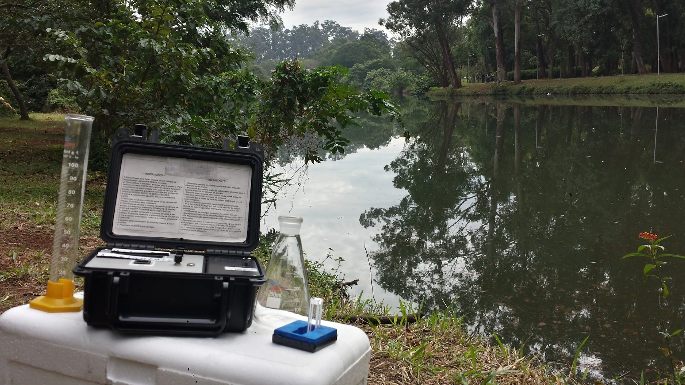

Varredura e Rastreamento Operacional
Inspeções e rastreamentos operacionais para avaliação das redes, identificação de gargalos, interferências, lançamentos irregulares e não conformidades.
A Ecojob desenvolve soluções integradas e tecnológicas para sistemas ambientais, saneamento e recursos hídricos, transformando dados em inteligência operacional.
Atuamos de forma integrada no monitoramento ambiental, modelagem hidráulica e hidrológica, supervisão operacional e gestão de infraestruturas críticas, combinando engenharia, tecnologia e inteligência de dados para apoiar a tomada de decisão e otimizar o desempenho dos sistemas.
Nossas soluções contribuem para operações mais eficientes, seguras e sustentáveis, atendendo aos desafios atuais e futuros da infraestrutura ambiental.

Coleta e análise da qualidade da água em campo.
Realizamos diagnósticos técnicos detalhados para identificar anomalias, avaliar o desempenho das infraestruturas e subsidiar a definição de ações corretivas e preventivas.
Inspeções e rastreamentos operacionais para avaliação das redes, identificação de gargalos, interferências, lançamentos irregulares e não conformidades.
Metodologias especializadas para identificação de ligações clandestinas, descartes irregulares, interconexões indevidas entre redes e falhas de vedação, permitindo rastrear o percurso e o destino dos fluxos.

Inspeções aéreas e monitoramento de áreas e estruturas de difícil acesso, com registro de anomalias e geração de informações georreferenciadas para apoio aos diagnósticos.

Inspeções internas por circuito fechado de televisão (CFTV), utilizando métodos não destrutivos para avaliação das condições operacionais, estruturais e hidráulicas das redes.
Por meio de sensoriamento avançado, telemetria e análise de dados, realizamos o monitoramento contínuo e em tempo real de sistemas ambientais e de saneamento, apoiando a gestão e a tomada de decisão baseada em dados.
Parâmetros monitorados
Monitoramento contínuo e em tempo real de efluentes e do sistema de esgotamento sanitário, acompanhando vazão, carga poluidora e demais indicadores para apoiar a operação e a conformidade ambiental.

Monitoramento da qualidade da água em córregos, rios e canais, com acompanhamento de parâmetros físico-químicos e avaliação da balneabilidade para a proteção dos corpos hídricos.

Monitoramento de sistemas de drenagem com sensoriamento de nível e telemetria, identificando variações anômalas de nível e vazão para apoiar a prevenção de alagamentos.

Estações meteorológicas inteligentes integradas a sistemas IoT e comunicação via satélite para monitoramento contínuo de precipitação, temperatura, umidade, pressão atmosférica e ventos, apoiando a avaliação de riscos e o planejamento operacional.

Estudo integrado de dados históricos, georreferenciados, topográficos e meteorológicos para a geração de mapas de calor (Kernel), identificando pontos críticos de recorrência, áreas suscetíveis a acúmulo e regiões prioritárias para atuação.
Desenvolvemos modelos hidráulicos e hidrológicos para compreender o comportamento de redes e sistemas ambientais, avaliando sua resposta a diferentes condições de operação e eventos críticos. As simulações permitem analisar cenários, identificar vulnerabilidades e apoiar o planejamento de intervenções, ampliações e investimentos.
Atuamos na operação assistida, supervisão técnica e gestão de sistemas de saneamento e recursos hídricos, promovendo maior confiabilidade, eficiência e controle por meio do acompanhamento contínuo dos processos e indicadores de gestão.
Acompanhamento operacional das unidades, controle de processos, gestão de indicadores de desempenho, elaboração de relatórios técnicos e apoio às atividades de manutenção, zeladoria e conservação das instalações, contribuindo para a eficiência e a confiabilidade dos sistemas.

Supervisão operacional de estações elevatórias, acompanhando o desempenho dos equipamentos, conjuntos motobomba e sistemas auxiliares — com controle operacional, gestão de indicadores, avaliação do consumo energético e suporte à manutenção, visando aumentar a disponibilidade, a confiabilidade e a vida útil dos ativos.
O futuro da infraestrutura
é digital.
Mais do que monitorar, a Tecnologia Ecojob conecta dados, sistemas e operações em um único ambiente digital. Nossa plataforma COI 4.0 integra sensores, telemetria, comunicação via satélite, modelagem computacional, análise geoespacial e inteligência artificial para transformar grandes volumes de dados em conhecimento aplicável.
Com uma visão integrada e em tempo real dos sistemas, a tecnologia permite identificar padrões, antecipar situações críticas, automatizar processos e ampliar a capacidade de gestão e controle das operações.
Tecnologias integradas
A integração entre monitoramento inteligente, modelagem, análise de dados e supervisão operacional gera ganhos concretos para a gestão de sistemas ambientais e de saneamento.

Redução da sobrecarga dos sistemas, otimização dos processos de tratamento e melhor utilização dos recursos disponíveis.
Direcionamento mais preciso das equipes de campo, diminuição de intervenções emergenciais e otimização das atividades de operação e manutenção.
Identificação antecipada de anomalias, obstruções, contribuições irregulares e riscos de extravasamento, permitindo ações antes que os problemas ocorram.

Redução do lançamento de cargas poluidoras em corpos hídricos, melhoria da qualidade da água e mitigação de impactos ao meio ambiente.

Análise de tendências, identificação de áreas críticas e priorização de investimentos e intervenções com maior assertividade.

Monitoramento contínuo, geração de alertas e suporte à tomada de decisão para uma gestão mais eficiente e resiliente.
Redes de distribuição, estações de tratamento e elevatórias passam a contar com um gêmeo digital, que reproduz seu comportamento operacional e permite simular cenários, antecipar falhas e apoiar decisões de forma mais rápida e segura.